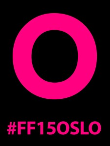

Sketsjing med Fortellerfestivalen
- Kategori:
- Kurs med åpning for andre
Kurs med åpning for andre
Åpent for profesjonelle skuespillere. En viss åpning for andre utøvende kunstnere med relevant erfaring. Andre kunstnere må sende CV. - Dato:
- 17.06.2015 til 21.06.2015
- Start kl :
- 10:00
- Slutt kl :
- 19:15
- Pris:
- 450,-
- Adresse:
- Norsk Skuespillersenter, Welhavensgate 1 og D, Oslo
SKETSJING - NYTT KONSEPT PÅ FORTELLERFESTIVALEN 2015!
I SAMARBEID MED NORSK SKUESPILLERSENTER TILBYR FORTELLERFESTIVALEN ET FORESTILLINGSRETTET KURS FOR ERFARNE FORTELLERE OG PROFESJONELLE SKUESPILLERE
{kind=link}
Ønsker du å jobbe sammen med andre kollegaer? Er du lei av lange og dyre utviklingsprosesser som ender opp uten et ordentlig resultat på scenen? Er du lei av tusen ideer som popper opp i hodet og som aldri blir til annet enn drømmer på et papir?
Bli med på SKETSJING – et intenst og lærerikt arbeid sammen med profesjonelle kollegaer og dyktige instruktører. Resultatet vises på Fortellerfestivalen 2015 på Dramatikkens Hus søndag 21.juni, og er en del av festivalens program.
Her kan du lese mer om Fortellerfestivalens program!
SKETSJING er en ny forestillingsform hvor humor, improvisasjon, fortellerkunst og teater møtes på en helt ny måte. På tre dager utvikler du en ide til forestilling sammen med de andre utøverne (17.-19.6) Fjerde dagen vises resultatet på scenen!(21.6)
Hovedideen er at ved mangel på tid og produksjonsmidler vil du som utøver måtte fokusere enda sterkere på innhold. SKETSJING handler om at du på kort tid skaper en forestilling som er uferdig og rå, men som likevel treffer publikum med kraft. Navnet er en blanding av det engelske verbet «to sketch», altså å skissere – og ordet «sketsj» som er et kort nummer i en revy.
Innhold og metode:
Utgangspunktet er selvopplevde historier knyttet til festivalens tema. Gjennom improvisasjon, utprøving av ideer, øvelser, veiledning og regi utarbeides en forestilling hvor fortellingen er den bærende uttrykksformen. Målet er å tydeliggjøre at en idé ikke trenger å være ferdig før den kan prøves ut og resultere i en forestilling. Alle fortellingene skal skape gjenkjennelse hos publikum og få de til å le eller gråte, og kanskje huske noe de hadde glemt.
Konseptet er blitt gjennomført to ganger tidligere med stor suksess. Instruktørene er begge utdannet dramaturger med lang erfaring i å utvikle produksjoner fra ide til ferdig resultat.
Åtte deltagere blir plukket ut på bakgrunn av kunstnerisk cv og en tekst om hvorfor du ønsker å delta (maks en halv side). Dette sendes til post@skuespillersenter.no innen 1. mai 2015.
Oda Radoor (f.1976) er dramaturg utdannet fra Institut for Dramaturgi ved Universitet i Århus. Hun har jobbet som dramaturg på Nationaltheatret og ved Dramatikkens hus, og i dag er hun frilans dramaturg, dramatiker, produsent og regissør.
{kind=link}
Ranveig Thon Bjørnestad (f. 1972) er frilans skuespiller, dukkespiller, dramapedagog, dramatiker og regissør. Hun har skrevet og satt opp diverse egenproduserte forestillinger i friteatergruppen Bandittene A/S, samt skrevet og regissert for Riksteateret. Hun har jobbet med Nordic Black Theatre, og undervist ved Norges Musikkhøgskole.
{kind=link}
Pris for medlemmer i NSF: 400,-